Anomaly intensity, not probability or severity. Fixed calibration display scale.
mvtec_3d_ad:63728f5ab3b37feaa03a796eefd44e572afe74e49b28e8fc3b19ec98838aeaed:test/bent/rgb/012.png
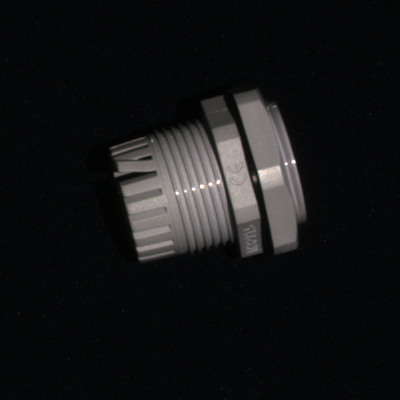
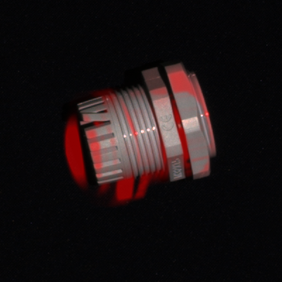
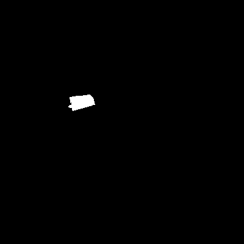
mvtec_3d_ad:63728f5ab3b37feaa03a796eefd44e572afe74e49b28e8fc3b19ec98838aeaed:test/bent/rgb/000.png
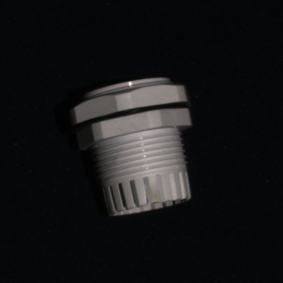
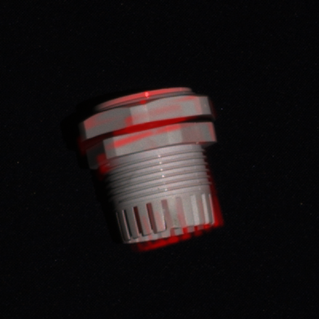
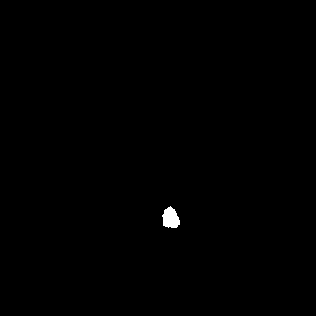
mvtec_3d_ad:63728f5ab3b37feaa03a796eefd44e572afe74e49b28e8fc3b19ec98838aeaed:test/good/rgb/013.png
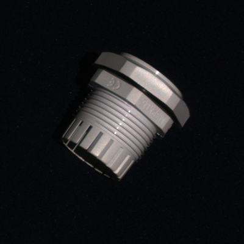
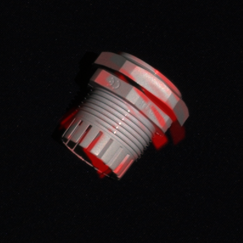
mvtec_3d_ad:63728f5ab3b37feaa03a796eefd44e572afe74e49b28e8fc3b19ec98838aeaed:test/good/rgb/000.png

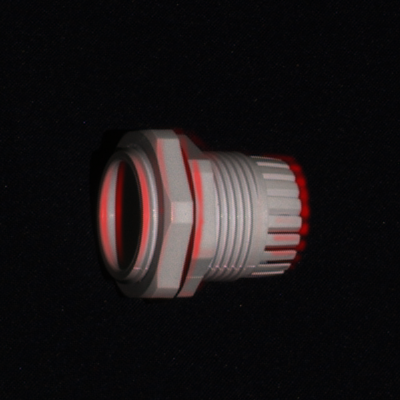

Anomaly intensity, not probability or severity. Fixed calibration display scale.
mvtec_3d_ad:63728f5ab3b37feaa03a796eefd44e572afe74e49b28e8fc3b19ec98838aeaed:test/bent/rgb/001.png
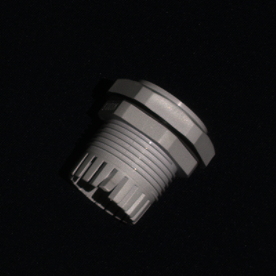
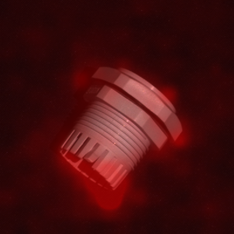
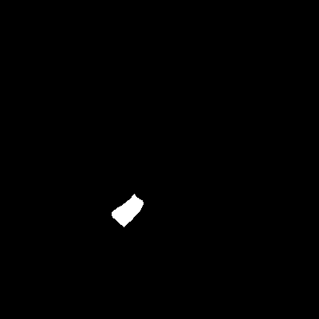
mvtec_3d_ad:63728f5ab3b37feaa03a796eefd44e572afe74e49b28e8fc3b19ec98838aeaed:test/bent/rgb/000.png

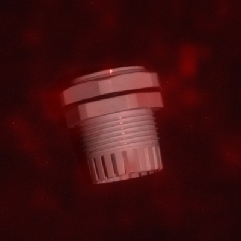

mvtec_3d_ad:63728f5ab3b37feaa03a796eefd44e572afe74e49b28e8fc3b19ec98838aeaed:test/good/rgb/002.png
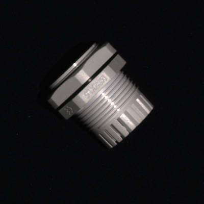
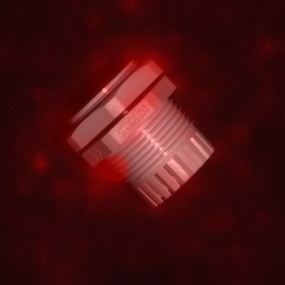

mvtec_3d_ad:63728f5ab3b37feaa03a796eefd44e572afe74e49b28e8fc3b19ec98838aeaed:test/good/rgb/000.png
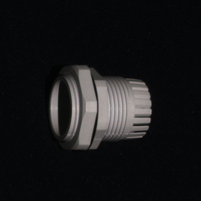
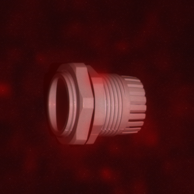

Anomaly intensity, not probability or severity. Fixed calibration display scale.
ksdd2:edcdb486809b24f1d17b785e30c52fafc5999554dd5fe18ddf77b61ceb6f36a8:test/20042.png
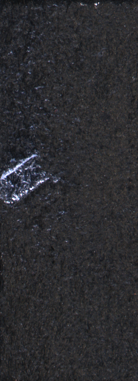
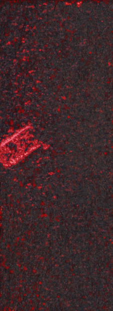
ksdd2:edcdb486809b24f1d17b785e30c52fafc5999554dd5fe18ddf77b61ceb6f36a8:test/20068.png
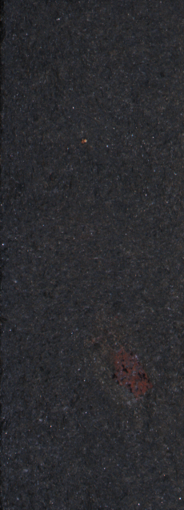
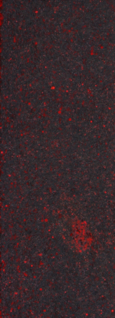
ksdd2:edcdb486809b24f1d17b785e30c52fafc5999554dd5fe18ddf77b61ceb6f36a8:test/20008.png
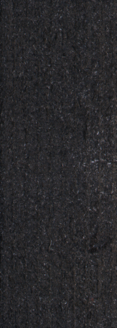
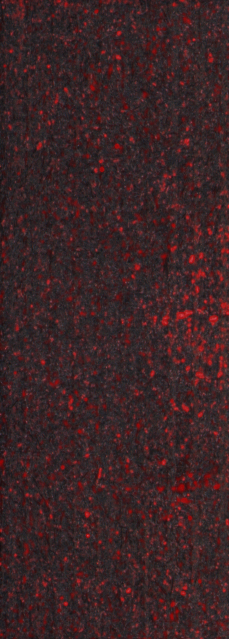
ksdd2:edcdb486809b24f1d17b785e30c52fafc5999554dd5fe18ddf77b61ceb6f36a8:test/20000.png

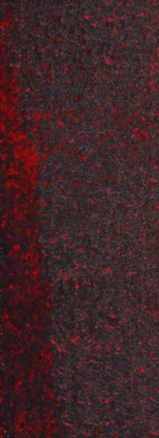

Anomaly intensity, not probability or severity. Fixed calibration display scale.
ksdd2:edcdb486809b24f1d17b785e30c52fafc5999554dd5fe18ddf77b61ceb6f36a8:test/20042.png

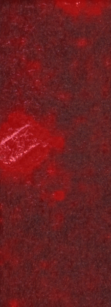

ksdd2:edcdb486809b24f1d17b785e30c52fafc5999554dd5fe18ddf77b61ceb6f36a8:test/20121.png
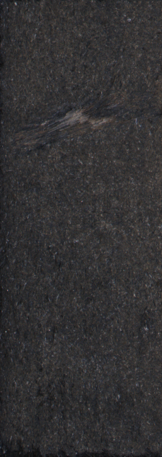
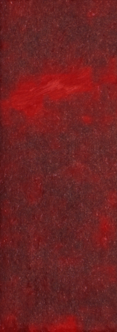
ksdd2:edcdb486809b24f1d17b785e30c52fafc5999554dd5fe18ddf77b61ceb6f36a8:test/20002.png
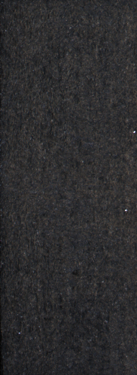
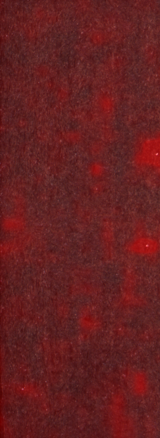
ksdd2:edcdb486809b24f1d17b785e30c52fafc5999554dd5fe18ddf77b61ceb6f36a8:test/20000.png
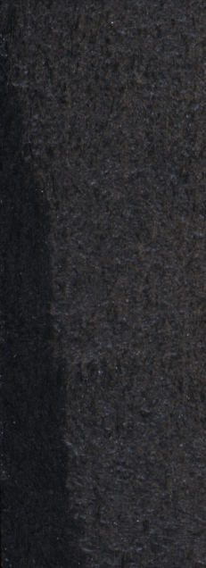
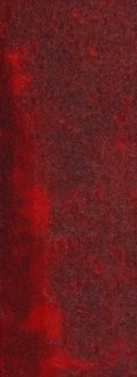